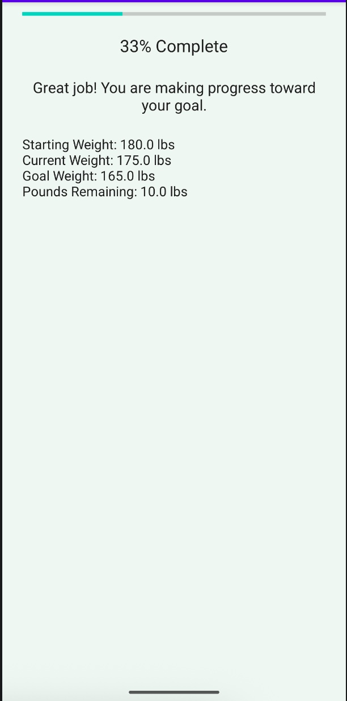

Enhancement Overview
This enhancement added a new Goal Tracking screen to the CS 360 Weight Tracking Application. The screen allows users to view their progress toward a target weight using a progress bar, a status message, and key weight statistics such as starting weight, current weight, goal weight, and pounds remaining. This improvement made the application more useful by giving users a clearer way to understand their progress.
Skills Demonstrated
- Software Engineering
- Mobile Application Development
- UI Design
- Testing and Debugging
- Goal Tracking Logic
- Progress Calculation
Course Outcome Alignment
This enhancement demonstrates my ability to design and improve a computing solution based on a user need. By adding goal tracking and progress logic, I addressed the problem of users not being able to clearly see progress toward their weight goals. I also had to make design choices that kept the application easy to use while adding new functionality.
Original Artifact Screenshots
These screenshots show the original version of the CS 360 Weight Tracking Application before the software engineering enhancement was added.


Enhanced Artifact Screenshot
This screenshot shows the new Goal Tracking screen added during the software engineering enhancement.

Narrative
The artifact selected for my first enhancement is my Weight Tracking Android Application that I developed in CS 360. This application is fairly simple and had basic features such as a login/create account, add/update/delete weight entries, and an SMS notification system for when a user reaches their goal weight. For this enhancement, an additional “Goal Tracking” screen was added with logic to showcase a progress bar and motivational message. The goal for this enhancement was to showcase my ability to have a clean, minimalistic design while also demonstrating my software engineering skills by adding logic to have an updatable progress feature. One of the main reasons I decided to add the Weight Tracking Application to my ePortfolio is because it demonstrates my ability to design an interface with functional logic. For example, employers might prefer candidates who know how to do front end and back-end design rather than one or the other. This application also has an SQL database which showcases that I can work on applications that use data for accounts, or user data. Finally, my SMS notification system showcases that I know how to create software that is functional for certain devices like an android phone. I believe that I met the course outcomes that I planned to cover during this enhancement. One of the problems of the design before was that users could only see their previous weight logs rather than actual progress of their weight tracking progress. To solve the issue I used logic to show a progress bar with the initial weight, current weight, and goal weight so that users can visualize how close they are to their goals. This fix did involve design tradeoffs because I had to add a new “Goal Tracking” screen, however; there are still only a total of four screens on the application which allows for a simple application after the enhancement. One thing that I learned while enhancing my artifact was that planning before adding and modifying an application is crucial. For example, I had to decide how the interface would have to be modified to add an additional screen and what layout would be the most accessible for a user. Another thing I learned while working on this enhancement was the logic for a percent progress bar. Making sure the progress bar works for gaining and losing weight was important because users have different goals. One problem I faced while working on this enhancement was connecting my new “Goal Tracking” screen to connect properly to the goal tracking button shown on the weight log screen. At first, when I tried clicking the button it wouldn’t change the application until I realized I hadn’t properly connected the two. Overall, the enhancement has demonstrated my software engineering and design skills.
Original Artifact
The original version of the CS 360 Weight Tracking Application.
Download Original ArtifactEnhanced Artifact
The enhanced version containing goal tracking and progress calculations.
Download Enhanced ArtifactFull Narrative
Full narrative describing enhancement decisions, implementation, and demonstrated software engineering skills.
Download Full Narrative